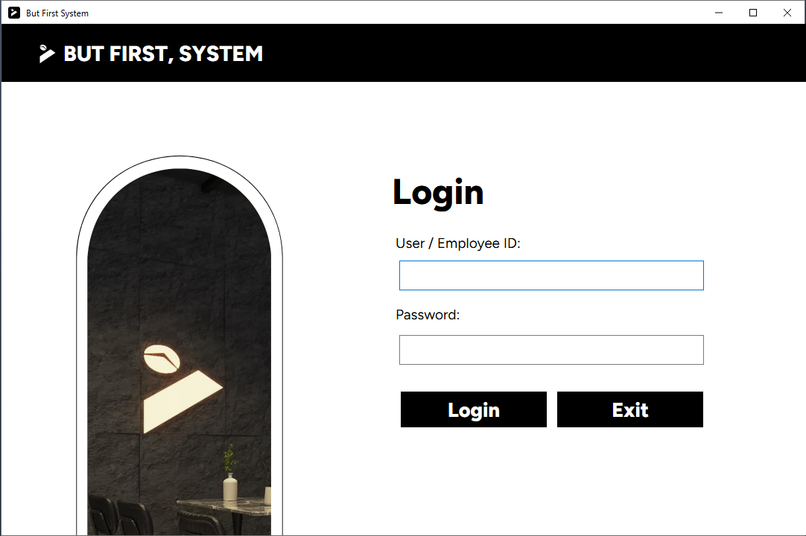
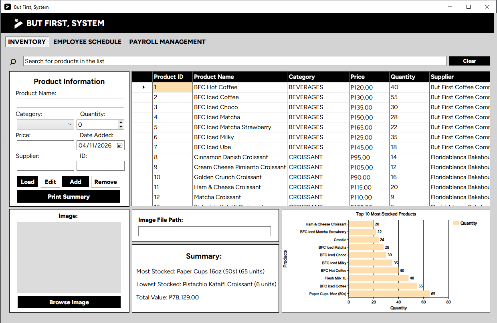
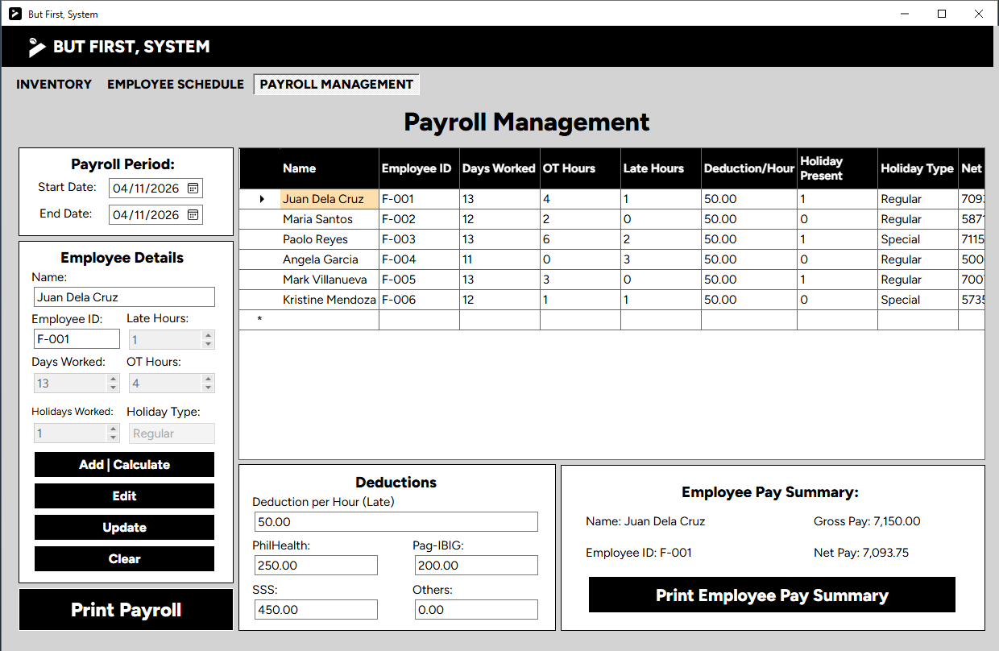

This project converts But First, System, a C# Windows Forms application used by But First Coffee
Floridablanca, into a PHP web application running on a framework we built ourselves. The framework follows the
lecture module: bramus/router handles routing, mustache/mustache renders logic-less templates,
and illuminate/database (Eloquent) is used standalone for persistence. On top of these packages we wrote a
thin core (App, Router, View, Response, Request, Database, Session and Logger), a middleware layer for authentication,
role checks, CSRF protection and request logging, and shared validation classes that serve both HTML forms and a JSON
API. The application is a small business CMS with three modules carried over from the desktop program: product
inventory with search, image upload, a stock summary and a top-ten chart; an employee shift generator with day-off
requests and randomized scheduling; and payroll management that reproduces the original C# pay formula. Every screen keeps
the exact layout, colors, fonts and coordinates of the WinForms designer. The system integrates the external Nager.Date
public-holiday API to show Philippine holidays inside a payroll period, with caching and graceful failure. Data is stored
in SQLite by default and MySQL/MariaDB is supported through configuration. The project includes 19 PHPUnit tests, a
seed script, a REST client request file and printable reports.
The IPT10 course asks students to integrate separate technologies (a routing library, a template engine, an ORM, a relational database and a third-party web service) into one working system, and to understand what a framework actually does instead of only using one. The final project therefore has two goals: build a minimal PHP framework from focused packages, and prove that it is usable by developing a real application on it.
We chose to migrate our earlier C# desktop project because it already reflects a real business process. The C#
version stored its data in SQL Server, used a DataGridView for every list and printed reports with
PrintDocument. Moving it to the web makes it reachable from any computer in the shop, removes the need to
install the .NET runtime, and lets several users share one database. The requirement was to keep the appearance
identical, so users who already know the desktop program can use the web version without retraining.
Building a custom framework is valuable because it exposes the pieces that full-stack frameworks such as Laravel or Symfony hide: the front controller, PSR-4 autoloading, route matching, middleware ordering, request/response objects and the database connection lifecycle. Laravel provides these through a service container, facades, Artisan, migrations and hundreds of classes; our framework provides the same ideas in fewer than ten short classes, each small enough to read in a single lecture. The trade-off is that features Laravel gives for free, such as queues, migrations with rollback and form-request validation, had to be written by hand or left out deliberately.
The framework uses the Model-View-Controller pattern with a single front controller. Folder and class names follow the lecture module so that the project can be compared directly with the reference source.
| Path | Purpose |
|---|---|
public/index.php | Front controller: boot, register routes, 404/500 handlers, run the router. |
config/config.php | Plain-PHP configuration with environment-variable overrides. |
src/Core/ | App, Router, View, Response, Request, Database, Session, Logger. |
src/Middleware/ | Auth, Admin (role), CSRF and RequestLogger middleware. |
src/Controllers/, Controllers/Api/ | HTML controllers per tab and JSON API controllers. |
src/Models/ | Eloquent models: Product, Payroll, EmployeeShift. |
src/Support/ | Validation (ProductInput, PayrollInput), PayrollCalculator, ShiftScheduler, HolidayApi, BarChart, Format. |
routes/web.php, routes/api.php | HTML routes and JSON routes with their middleware. |
views/ | Mustache layout, login, main window, print reports, error pages and partials. |
database/, tests/ | Seed script, MySQL schema, SQLite file; PHPUnit tests. |
Naming conventions are PSR-4 with the App\ namespace mapped to src/, singular PascalCase
model names, snake_case table and column names, and controller actions named after the CRUD verb
(index, store, update, destroy).
Routes map a method and a URI pattern to a Controller@method string. Our Router wraps
Bramus and turns that string into [new App\Controllers\Controller(), 'method']; regular-expression groups
such as (\d+) are passed to the action as arguments. HTML forms only send GET and POST, so web writes use
POST and redirect afterwards (Post/Redirect/Get), while the JSON API uses GET, POST, PUT and DELETE.
// routes/web.php (excerpt)
Router::get('/inventory', 'InventoryController@index');
Router::post('/inventory', 'InventoryController@store');
Router::post('/inventory/(\d+)', 'InventoryController@update');
Router::post('/inventory/(\d+)/delete', 'InventoryController@destroy');
// src/Core/Router.php - Controller@method resolution
[$controller, $method] = explode('@', $handler, 2);
$class = 'App\\Controllers\\' . $controller;
return static function (...$params) use ($class, $method): void {
(new $class())->{$method}(...$params);
};
Middleware classes implement a one-method interface, handle(Request $request), and are attached to URI
patterns with Router::middleware(), which registers them as Bramus "before" hooks. They run in
registration order: RequestLogger writes every request to storage/logs/app.log;
CsrfMiddleware rejects form posts without the session token; AuthMiddleware redirects
guests to the login page or returns JSON 401 for the API (accepting either the session or an X-API-Key
header); and AdminMiddleware enforces the employee restrictions of the original C# login, where the Edit
and Remove product buttons and the Add | Calculate payroll button were disabled for the employee account.
// routes/web.php - middleware registration
Router::middleware('GET|POST|PUT|DELETE', '/.*', RequestLogger::class);
Router::middleware('POST', '/.*', CsrfMiddleware::class);
Router::middleware('GET|POST', '/(inventory|schedule|payroll|logout)(/.*)?', AuthMiddleware::class);
Router::middleware('POST', '/inventory/\d+/delete', AdminMiddleware::class);
// src/Middleware/AuthMiddleware.php (excerpt)
if (Session::get('user') !== null) { return; }
if ($request->isApi()) {
Response::json(['error' => 'Unauthenticated. Log in or send the X-API-Key header.'], 401);
exit;
}
Response::redirect('/login');
App::boot() performs an explicit start-up sequence: load configuration, set the timezone, create
storage folders, boot Eloquent through Database, boot Mustache through View and start the
session. Request is an immutable wrapper around the superglobals that also decodes JSON bodies and rejects
top-level arrays. Response provides json(), which sets the status code and header before
printing, and redirect(), which exits after sending the Location header. View::render()
renders a page template and injects it into a layout as {{{content}}}, adding shared values such as the
CSRF token, the signed-in user and the one-shot flash message that drives the Windows-style MessageBox.
// src/Core/View.php - layout composition $data += self::shared(); $content = self::$engine->loadTemplate($template)->render($data); return self::$engine->loadTemplate($layout)->render($data + ['content' => $content]); // src/Core/Database.php - Eloquent outside Laravel $capsule = new Capsule(); $capsule->addConnection($config); $capsule->setAsGlobal(); $capsule->bootEloquent();
Configuration lives in config/config.php as a plain PHP array, as in the module, but every value can be
overridden with an environment variable (APP_URL, DB_DRIVER, DB_HOST,
DB_DATABASE, DB_USERNAME, DB_PASSWORD, API_KEY and
HOLIDAYS_API_URL). It also holds the payroll constants from the C# code (daily rate 550, eight hours per
day, overtime multiplier 1.25), the company details printed on reports, the upload limits and the two accounts from the
original login form, stored as password hashes. Values are read with dot notation, for example
App::config('payroll.daily_rate').
The C# system used two SQL Server databases and changed the EmployeeShift key several times with
ALTER scripts. For the web version we merged everything into one database with three tables, kept the original
columns, and linked shifts to payroll records through the employee ID (for example F-006).
The foreign key uses ON DELETE SET NULL so that removing a payroll record never deletes a schedule
row, and ON UPDATE CASCADE so that changing an employee ID keeps the link. Tables are created by
database/seed.php with Eloquent's schema builder, which works on both SQLite and MySQL, and an equivalent
hand-written script is provided in database/schema.sql for phpMyAdmin or the MySQL console.
// database/seed.php (excerpt)
$schema->create('employee_shift', static function (Blueprint $t): void {
$t->increments('id');
$t->string('payroll_employee_id', 50)->nullable();
$t->string('names', 100);
$t->string('schedule', 100)->nullable();
$t->string('day_off', 20)->nullable();
$t->timestamps();
$t->foreign('payroll_employee_id')->references('employee_id')->on('payroll')
->nullOnDelete()->cascadeOnUpdate();
});
The connection is configured in config/config.php. By default the driver is SQLite with the file
database/database.sqlite, so the project runs without a database server. For XAMPP, set
DB_DRIVER=mysql, host 127.0.0.1, port 3306, database
butfirstsystemdb, username root and an empty password, then run
composer db:seed.
The application is a content-management system for a coffee shop. It reproduces the two C# forms: the Login form
(Form1) and the main window (Form2) with its three tabs. To keep the appearance exact, each
control is absolutely positioned with the left, top, width and height values copied from
Form1.Designer.cs and Form2.Designer.cs, and font sizes are given in points (11.25 pt Figtree,
Figtree ExtraBold headings), exactly as in the designer. A stylesheet recreates the WinForms controls: black flat
buttons, popup buttons, FixedSingle panels, NumericUpDown spinners, the FlatButtons tab strip, and DataGridView grids
with black headers, a row-header column with the current-row arrow, NavajoWhite selection and the empty "new row"
marked with an asterisk. C# MessageBox.Show calls became an identical HTML dialog fed by session flash
messages, so the wording, captions and icons of every message are unchanged.

Authentication. Users sign in with the two accounts of the original system (admin and employee).
Usernames are case-insensitive and passwords are verified with password_verify; the session ID is
regenerated after login. Employees see the Edit, Remove and Add | Calculate buttons disabled, and the same routes are
blocked on the server by AdminMiddleware.
Inventory. Products are listed in a grid with live search over ID, name, category and supplier.
Clicking a row fills and locks the Product Information panel; Edit unlocks the fields and changes Add to Update;
Remove asks for confirmation. Images are uploaded through Browse Image and stored in public/uploads
after extension, size and content checks. The Summary panel shows the most and least stocked products and the total
inventory value, and a server-generated SVG reproduces the MS Chart "Top 10 Most Stocked Products" bar chart.

Employee schedule. Selecting a row shows the employee's schedule, break and duties. A day off can be requested only if no other employee already has that day; Reset Dayoff clears all requests after confirmation, and Randomize Shift Schedule shuffles employees over the existing shift slots in one database transaction.
Payroll. The Payroll Management tab keeps the C# formula in PayrollCalculator:
basic pay is days worked times 550, holiday pay adds 550 per holiday, overtime is paid at 1.25 times the hourly rate,
and deductions are SSS, PhilHealth, Pag-IBIG, others and late hours times the deduction per hour. Add | Calculate
inserts or updates by employee ID, Edit and Update follow the original edit mode, and the Employee Pay Summary panel
updates as soon as a row is selected. All print buttons open printable pages that copy the layout of the C#
PrintDocument reports, including the company header and the "Prepared by" footer.

Each feature uses the framework in the same way: a route points to a controller action, middleware checks the session and role, a shared input class validates and normalizes the data, an Eloquent model reads or writes the row, and the action either renders a Mustache template or redirects with a flash message.
Purpose. Payroll in the Philippines depends on regular and special holidays, but the C# program expected the user to know them. We integrated the Nager.Date public-holiday API so the system can show which Philippine holidays fall inside the selected payroll period. The result appears in the status strip of the main window and on the payroll printouts, and public holidays are labeled "Regular" while other types are labeled "Special" to match the Holiday Type field.
Endpoint and format. The service is called with
GET https://date.nager.at/api/v3/PublicHolidays/{year}/PH and returns a JSON array of objects with
date, localName, name and types. Our application exposes it through
its own endpoint, GET /api/holidays?start=YYYY-MM-DD&end=YYYY-MM-DD (or ?year=), so the
browser never calls the third party directly.
Authentication. Nager.Date is a public API and needs no key. Our own API, including the
holiday proxy, requires the logged-in session or the X-API-Key header, configured with the
API_KEY environment variable.
Errors and rate limits. Responses are cached on disk for one day per year and country, which keeps the number of requests very low and makes pages fast. cURL uses an eight-second timeout. If the network fails, the HTTP status is not 200 or the JSON is invalid, the error is logged, a stale cache is used when available, and otherwise the endpoint answers 502 with a message while the rest of the page keeps working.
// src/Support/HolidayApi.php (excerpt)
if (is_file($cacheFile) && (time() - filemtime($cacheFile)) < $this->cacheTtl) {
$this->source = 'cache';
return $this->normalize(json_decode((string) file_get_contents($cacheFile), true) ?: []);
}
$url = sprintf('%s/PublicHolidays/%d/%s', $this->baseUrl, $year, $this->country);
[$status, $body, $error] = $this->get($url); // cURL, 8 s timeout
if ($error !== null || $status !== 200) {
$this->lastError = $error ?? "Holiday API responded with HTTP {$status}.";
Logger::error('HolidayApi: ' . $this->lastError);
if (is_file($cacheFile)) { return $this->normalize(...); } // stale cache fallback
return [];
}
file_put_contents($cacheFile, $body, LOCK_EX);
Besides consuming an external API, the project provides its own JSON API for products, payroll and shifts
(documented at /docs), following the module's status codes: 200, 201, 400 for invalid JSON, 401, 403,
404, 409 for a day off that is already taken, 422 for validation errors and 502 for an unavailable external service.
Unit tests. We used PHPUnit 10. The suite has 19 tests and 38 assertions in three classes:
PayrollCalculatorTest checks that the PHP calculator returns the same values as the C# method (for
example 13 days, 4 OT hours, 1 late hour and one holiday give a net pay of 7,093.75);
InputValidationTest checks required fields, decimal prices, the 0 to 1000 quantity range and the exact
C# error messages; and SupportTest checks peso and .NET date formatting, chart output and escaping, and
the holiday client's cache, type mapping and failure handling without using the network. The suite runs with
composer test.
Manual testing. Every button of the three tabs was tested in the browser with the admin and
employee accounts, and the API was tested with curl and the requests in requests/api.http, covering
success, 400, 401, 403, 404, 409 and 422 responses, missing CSRF tokens and the HTML and JSON 404 pages.
Issues and solutions. The original SQL scripts contradicted the C# code (the code used
NetPay, LateHours and PayrollEmployeeID columns that the scripts never created),
so the schema was rebuilt from what the code actually reads and writes. WinForms ReadOnly state and
disabled controls do not exist on HTML forms in the same way, because disabled inputs are not submitted, so the
script re-enables them just before submitting. A disabled DataGridView row selection behaved differently from HTML
tables, so a small grid component now tracks the current row and selected cell. The original randomizer deleted all
shift rows and lost the link to payroll; the PHP version shuffles employees together with their employee ID inside a
transaction. Finally, the C# grid labelled the net-pay column "Basic Pay"; the web grid shows "Net Pay" so the
numbers are not misread.
The recorded presentation will run for 10 to 15 minutes in MP4 format at 720p or higher, following the required structure: project overview and the original C# system (2-3 minutes); framework design with the folder structure, routing, middleware and request lifecycle (3-4 minutes); a live demonstration of login, the three tabs, the employee restrictions, printing, the JSON API and the holiday API (4-5 minutes); the database design and the challenges described above (1-2 minutes); and conclusion and future work (1 minute). The recording link will be submitted through the course LMS together with this PDF.
The project shows that three focused packages and a few hundred lines of glue code are enough to build a usable MVC framework, and that this framework can carry a real business application. The web version keeps the exact look of the desktop program while adding a JSON API, role-based middleware, CSRF protection, an external holiday service and automated tests. Future work includes user management stored in the database instead of fixed accounts, database migrations with rollback, automatic holiday pay rates based on the holiday type, export of reports to PDF and Excel as the original Office Interop reference intended, and pagination for large inventories.
Bramus, B. (2024). bramus/router: A lightweight and simple object oriented PHP Router. GitHub. https://github.com/bramus/router
Laravel. (2025). illuminate/database: The Illuminate Database package. https://github.com/illuminate/database
Mustache. (2023). mustache.php: A Mustache implementation in PHP. https://github.com/bobthecow/mustache.php
Nager.Date. (2026). Public Holiday API v3. https://date.nager.at/Api
PHP Framework Interop Group. (2016). PSR-4: Autoloader. https://www.php-fig.org/psr/psr-4/
Bergmann, S. (2025). PHPUnit 10 manual. https://docs.phpunit.de/en/10.5/
IPT10 Course Module. (2026). Build your own PHP framework: Routing, logic-less templates, and Eloquent CRUD.
Full source code (framework and application): [Repository link or USB drive label].
ButFirstSystem-PHP/
composer.json phpunit.xml README.md
config/config.php
public/index.php public/assets/css/winforms.css public/assets/js/app.js public/uploads/
routes/web.php routes/api.php
src/Core/ App.php Router.php View.php Response.php Request.php Database.php Session.php Logger.php
src/Middleware/ Middleware.php AuthMiddleware.php AdminMiddleware.php CsrfMiddleware.php RequestLogger.php
src/Controllers/ AuthController.php InventoryController.php ScheduleController.php PayrollController.php DocsController.php
src/Controllers/Api/ ProductController.php PayrollController.php ShiftController.php HolidayController.php
src/Models/ Product.php Payroll.php EmployeeShift.php
src/Support/ ProductInput.php PayrollInput.php PayrollCalculator.php ShiftScheduler.php HolidayApi.php
BarChart.php Format.php ImageUpload.php MainWindow.php
views/ layout, login, main, docs, partials/, print/, errors/
database/ seed.php schema.sql database.sqlite
tests/ PayrollCalculatorTest.php InputValidationTest.php SupportTest.php
requests/api.http
Run: composer install, composer db:seed, composer serve,
then open http://localhost:8000 and sign in with admin / admin123 or employee / employee123.